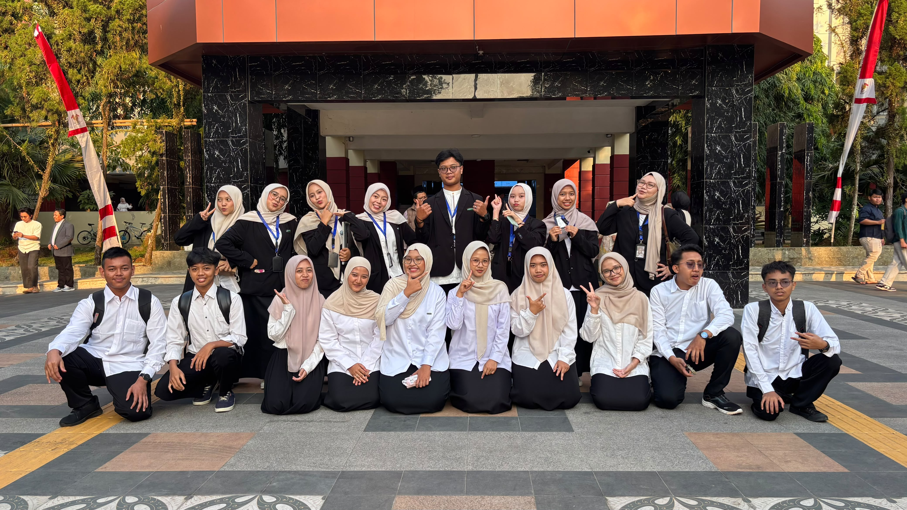
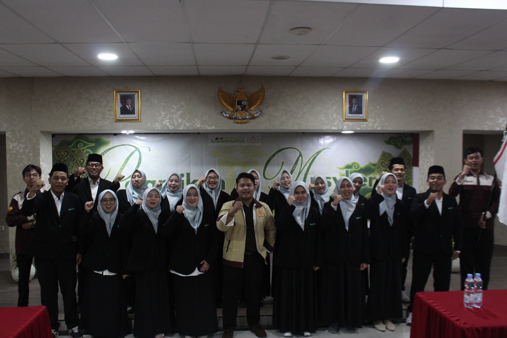

Setiap bingkai adalah cerita tentang semangat yang terus bertumbuh dan jejak nyata yang kami tinggalkan untuk sesama.
Klik foto untuk memperbesar. Ganti foto di folder foto/galeri dengan nama file yang sama.

Temu Perdana Peringatan 17 Agustus
Peringatan 17 Agustus
Pelantikan Musker
Musker